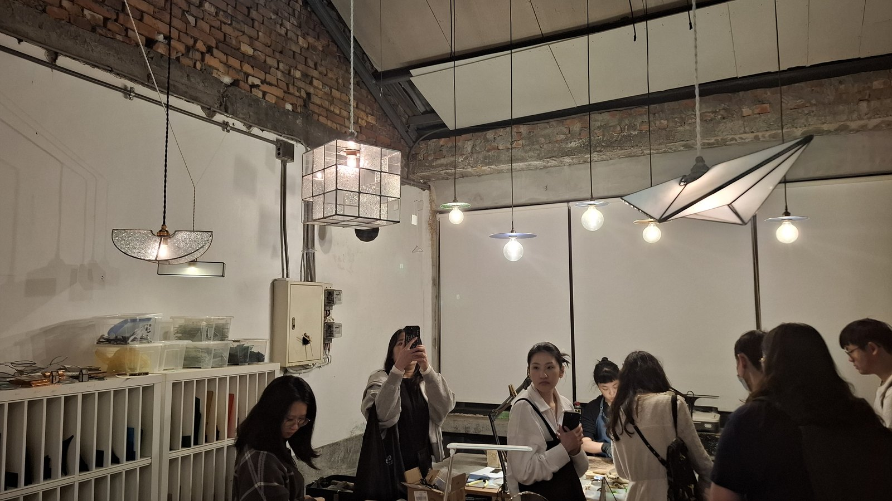

同期駐村的「垂直串門」動線
兩團隊簽下同個三年合約進駐上下樓，平時各自專注接案與研究；唯有這晚把內部樓梯打開，一氣呵成從陶土跨到玻璃。

打開台北 2025・傳承創生｜雙場域預約限定夜場
從士林前國稅局宿舍一樓的 1230°C 窯火與濕式復刻馬賽克磚出發，踏過燈光微暗的狹窄紅磚階梯，推開二樓預約制鑲嵌玻璃工作室與暗房藝廊——一棟老宅、兩組同期駐村團隊，在週六夜裡串起半世紀建材記憶與兩百年手感微光。
隱身在士林中興街巷內的「藝響空間」，前身是國稅局員工宿舍與配財室，後來交由臺北市文化局託管為藝術家駐村與工作空間，以三年一期合約開放創作團隊申請進駐。2023 年，原本就相識的「爿爿花手工瓷磚」與「真真鑲嵌玻璃研究所」以同一期合約分別住進一樓與二樓，各自在老建築裡研究幾乎在臺灣斷鏈的傳統工藝。
這場「打開台北 2025」夜間限定場次，是少見的「一次預約、雙場域垂直串聯」。動線從 24 號 1 樓的瓷磚桌邊出發，聽完濕式成型手工磚的復興故事與七道工序，再循著樓間狹窄陡峭的階梯直上 28 號 2 樓——先抬頭看見老宿舍原始的紅磚山牆與木梁結構，接著走進平時只採預約制的玻璃製作現場，最後在壓暗燈光的奇幻藝廊裡，看兩百年前的鑲嵌玻璃如何化為當代光影與聲音裝置。
相較於白天的例行開放或線上圖錄，這場串聯夜訪藏著四個只有親身跨過一、二樓才看得到的切片。
兩團隊簽下同個三年合約進駐上下樓，平時各自專注接案與研究；唯有這晚把內部樓梯打開，一氣呵成從陶土跨到玻璃。
長桌上直接攤開扁平射出口鐵件、3D 列印壓模、未上釉的 800°C 素燒磚與 1230°C 成品，指尖一摸就懂何謂兩面均勻散水。
真真平時不隨意開門營業；這晚工作桌邊夥伴正在實作，親眼看懂融錫表面張力自然成形、不做打磨的「工藝內涵」。
剛從日本愛媛縣停業玻璃廠扛回的昭和絕版壓花玻璃，被裁成黑膠尺寸架在唱盤旁——上個時代的兩件器物在此發出新聲。
夜裡七點半走進士林中興街，一樓玻璃門內透出乾淨的暖白燈光，門面上貼著「打開台北 2025・傳承創生・限時開放 48 HRS」的黃色海報，門旁牆角還留著老宿舍時期的電表箱與「26」號門牌。進門後，大家圍著兩張擺滿各色樣板的長桌站定。
拿起手邊厚實的《爿爿花—臺灣傳統瓷磚圖鑑》，主理人笑著說出意想不到的起點：團隊成員並非陶瓷工業本科，也不是瓷磚廠二代，最初只是就讀視覺／平面設計系時的大學畢業製作專題。從 2013 年起，他們跑遍全臺北中南街區進行田野調查、翻爬論文史料，把臺灣建築立面上百年來的瓷磚圖樣重新繪製成數位 Pattern，最後在 2021 年透過群眾募資出版這本圖鑑。
沒想到在跑訪冠軍磁磚、合成磁磚等大型建材廠時，他們卻碰上一個讓人惋惜的事實：圖鑑裡最常出現在五、六〇年代老宅牆面與浴廁的拼花馬賽克磚，其實早在約 1970 年代就已停產，算一算消失將近半個世紀。「既然它作為工業建材已經被淘汰，但視覺表現上又這麼有臺灣的獨特性，那我們就自己來復刻吧。」於是在 2023 年進駐藝響空間，從零開始摸索手工製磚。
順著牆面高處一排老房子搶救下來的實物標本，主理人把臺灣一百多年來的瓷磚歷史壓縮成三個清楚的轉折。最常被問的問題是：「為什麼早期瓷磚都做成小顆的，現在大樓卻越貼越大片？」答案不是審美偏好，而是窯燒物理限制——早年燒製技術尚未成熟，大片胚體在高溫下極易變形、翹曲或失去水平，做成單邊 8 公分以內的小顆馬賽克，貼附牆面反而最穩定。
日本明治維新後學習西班牙製磚技術並加以復刻，引進臺灣貼於古蹟與民宅立面。圖像性強、色彩極為繽紛，如嘉義花磚博物館搶救的便是這一時期的日式花磚。
鋼筋混凝土建築取代紅磚後，民眾一時不習慣灰色水泥柱「光禿禿」的模樣，遂燒製尺寸如紅磚的外牆面磚；高溫瓷化既美觀，也替多雨的臺灣增加結構防水性。
遠看以為髒舊的老屋小口磚，近看才發現竟混用霧面與亮面兩種釉！因拼花極度仰賴人工排磚貼網，隨著臺灣工資上漲、工廠外移東南亞與中國大陸，這門工藝漸被全自動印刷大磚取代而停產五、六十年。
大廠商業瓷磚用的是「乾式成型」——將乾陶瓷粉倒進鋼鐵模具高壓壓出；爿爿花則參考西班牙與義大利手工磚，自行研發出適合少量多樣的「濕式成型（Wet-pressing）」。從一塊濕軟的陶土到貼上牆面的 30×30 公分單元，共要經過七道精密卻充滿手工溫度的關卡：
一般陶藝工作室的煉土機抽真空後擠出圓柱土團；團隊特製了扁平金屬射出口，直接擠出一面平、一面刻有背溝的陶板，既防翹曲也利於水泥咬合。
刮平陶板後，用 3D 列印製作的「上寬下窄」客製模具垂直壓切。人力壓製讓樹脂模相當耐用，濕土收縮造成的微弧邊角反倒留住手工氣韻。
濕胚擺在透氣吸水的瓷板上層疊陰乾一天。唯有正反兩面同時平均散水，收縮率才一致；若單面乾燥，就會像烤魷魚一樣捲起來。
送進後方窯室的電窯進行第一次 800°C 素燒，燒乾水分並讓胚體堅固，同時保留無數細微毛細孔以便後續吸釉。
以高嶺土、骨灰與發色金屬礦物自調釉漿，將素燒磚倒扣浸入釉箱，依配方精算 5 秒或 8 秒。太薄不顯釉感，過厚則流淌，能做出霧面、亮面、緞面與冰裂釉。
第二次進電窯燒至 1230°C 完成瓷化。即便同一台電窯，上下層仍有微溫差，每窯色澤皆有細微變化，貼牆時刻意混拼才顯自然韻律。
出貨前將成品正面朝下排入格板，背面刷白膠貼上纖維網，組成 30×30 公分（一才）標準單位（一坪約 36 才），讓工地師傅直接對齊貼牆。
談到現代應用，主理人很坦白地劃出工藝邊界：小顆馬賽克中間滿布填縫劑（含水泥與乳膠成分，雖防潑水但仍有毛細孔、容易吃色），因此比起戶外外牆或高油污地板，手工復刻磚更適合用在室內吧台、玄關落塵區、開放式廚房或茶水區立面，作為空間畫龍點睛的視覺焦點。
運用 3D 列印模與人工浸釉，專做獨一無二的小面積訂製。例如復興 SOGO 的 Aesop 門市轉角處，便由團隊精算濕胚成型後的回彈與收縮率，反覆測試才燒出精準貼合曲面的弧面磚；此外每月也開辦三週制工作坊（壓土 → 上釉 → 填縫），讓一般人也能帶回 20 公分或一才掛畫。
若業主需要整間店面或建案等級（動輒 1,000 才以上，相當於近 28 坪牆面），工作室會先在士林完成造型比例與釉色配方確認，再委由南部傳統工廠開立金屬模具進行量產——把平面設計轉譯成建築立面的最後一哩路。
告別一樓溫暖明亮的瓷磚工作桌，一行人排隊踩上僅容一人側身通行的陡峭階梯。踩到一半就會瞬間明白活動須知那句「空間燈光昏暗且樓梯窄小、12 歲以下孩童恕不接待」絕非客套——這棟 1960 年代前後留下的前國稅局配財室與員工宿舍，沒有寬敞的觀光動線，上樓迎面就是裸露的紅磚山牆、貨架上成排銳利的古董玻璃切片，以及正在高溫加熱的電烙鐵。
但也正因為完全保留了真實工作室的尺度，雙腳踏上二樓木地板的瞬間，空氣立刻從「泥土與電窯」切換成「松香焊油與暖黃燈泡」，一場只屬於成年人夜晚的工藝探險才正要開始。
站在挑高斜頂的紅磚山牆下，戴著黑帽的主理人先解釋工作室名稱裡「研究所」三個字的重量——對他而言，鑲嵌玻璃不是單純的商品買賣，而是一種持續進行的實驗與思考狀態。他的右手邊整面層架擺滿實驗中的玻璃料與半成品，左手邊則是待交付的訂製燈具；因為平時並非一般對外營業門市，能這樣直接走進工作桌旁看動線，是極為難得的體驗。
這份執著源於一段「找回身體感」的轉折。過去從事當代藝術與新媒體藝術的他，成天對著電腦工作，忽然驚覺「自己離身體好遠」。一次為了做玻璃裝置去學鑲嵌玻璃，竟意外愛上雙手直接與玻璃、金屬對話的真實觸感，決定送給自己兩份禮物：一段雙手參與材料的過程，以及一盞溫暖的光。
而這門約 200 年前自 Tiffany 燈發展出來的工藝（傳統一只花草蝴蝶燈罩動輒上百片玻璃），早年臺灣在「代工王國」時期其實也曾替國外代工過，卻隨著產業外移在臺灣完全斷鏈——沒有產業鏈、也沒有代工廠，如今幾乎只剩教堂工藝師或少數自學者還在苦撐。
現代工業燈飾為了求快，多用鐵條模具直接框住玻璃點焊再電鍍；真真卻刻意挑了最費工、沿用兩百多年的傳統銅箔法。工作室另一隅，製作夥伴「又」正戴著藍圍裙坐在工作燈下專心焊接，讓大家近距離看清每一步的物理細節：
以高硬度合金滾輪刀（早期是用鑽石尖端）垂直施力劃開表面，再用 U 字鉗順勢掰斷，發出清脆的「啪」聲。玻璃切割沒有第二次機會，弧線最考驗穩定度——熟手光聽刀聲就知道力道有沒有「虛掉」或歪斜。
剛掰斷的玻璃邊緣極為鋒利危險，必須一片一片上磨輪機修磨到手指可以安全觸碰、尺寸也嚴絲合縫的狀態。
將背面帶黏性的薄銅箔膠帶，像鑲邊一樣沿著每片玻璃的輪廓一圈一圈手工包覆折平，作為後續吃錫的介質。
大把焊槍將錫條融化包覆銅箔，靠液態錫的表面張力自然拱起圓潤邊條。焊完不做任何打磨，留下的微幅凹凸與手工筆觸，正是鑲嵌玻璃最誠實的內涵。
L008 說明書寫著「古玻璃邊緣如有油漆顏色，是創作者刻意保留原本古玻璃本身既有的特點（早時使用者塗油漆窗框時刷上的）」。從製作區跨進一旁的「奇幻藝廊區」，室燈刻意全部關掉，只留一盞盞不同材質的玻璃作品在水泥斑駁、繪有泰國藝術家 Lolay 泰文塗鴉的牆邊靜靜發亮。主理人把這裡的核心字定為 RE-LIGHT——透過創作再次點亮老物件。而且現場每一件燈具都只編上編號、不取名字，因為他希望觀者直接面向光的模樣，填進自己的記憶。
桌上五盞繫著細繩蝴蝶結的方形盒燈，還有頭頂的長方吊燈 L004，是他給現代人的一道「慢」練習：「我們太習慣買做好的東西了，我想做一件像小時候拆禮物一樣、必須花時間親手解開緞帶、把蓋子好好抬起來才能換燈泡或收進私密小物的燈。」而這份「留住時間」的念頭，也表現在五金選材上：所有燈頭皆為黃銅製，會隨著歲月慢慢氧化變深——曾經有一家大小帶著老家拆下來的舊窗戶來找他改造成新家的燈具，讓舊光繼續陪著新生活。
藝廊另一角更藏著主理人從新媒體背景延伸出的跨界驚喜：靠在低窗邊的白色鐵三角黑膠唱盤，搭上他前陣子剛在日本愛媛縣個展發表的《昭和之音》——將昭和年代的壓花玻璃裁成黑膠唱片大小，直接放上唱盤讓唱針去刮擦玻璃凹凸花紋，讓兩個上個時代的器物合體發出全新聲響；牆面上則流動著與臺中國家歌劇院合作延伸的沉浸式投影，打出一句正好為這個夜場下註腳的字幕：「用一盒窗景，收妥一段記憶」。
為什麼臺灣老窗幾乎只有「海棠花」與「十字紋」？一櫃貼著年份的樣片給了答案。
壓花玻璃是將滾燙玻璃液經雕刻滾輪壓出「四方連續」的紋樣。主理人指出，早期大型刻花模具造價極高，臺灣玻璃廠多半只引進海棠花（其實源自英國設計）與十字紋兩種大量生產，成了全臺共同的記憶；反觀日本玻璃廠多自行開模印製，發展出貼近四季風情的豐富圖案。幾年前他赴日本愛媛縣交流，巧遇一間即將停業的老工廠，當場一口氣切下整批絕版壓花玻璃扛回臺灣。
順帶一提一個意外冷知識：別以為花紋玻璃才稀奇，在古董老料市場裡最難尋的反而是「早期透明清玻璃」——因為早年很難燒出完全沒有氣泡的純淨玻璃，多數老清玻璃早已碎裂換新，如今想要找到完好帶著微氣泡與水波紋的舊時代透明玻璃，往往得靠「吸引力法則」與時間去等。
八點半左右步出中興街，花台邊的拼花馬賽克立牌還亮著餘溫；這一夜沒有華麗展櫃，只有兩個團隊把「不完美」留給工藝本身。
一樓把 1970 年代停產的馬賽克救回牆面，二樓把老宅窗戶拆下的玻璃重新點亮；同一座前國稅局宿舍，成了老屋與老材料一起續命的基地。
電窯上下層的微色差、故意留著舊油漆邊緣的古玻璃、不做打磨的焊錫邊條、會隨歲月變深的黃銅燈頭——它們都在提醒我們，手作的價值在於不可複製。
親眼踩過窄到得側身的紅磚樓梯、聽見玻璃一刀掰斷的脆響，才會理解為何這兩間工作室選擇保留小尺度預約制與工作坊，讓材料自己說話。
無論是幫老家舊窗做一盞新燈，還是替玄關貼上三週親手壓製的拼花磚，傳統工藝沒有被鎖進博物館，而是重新回到日常牆角。